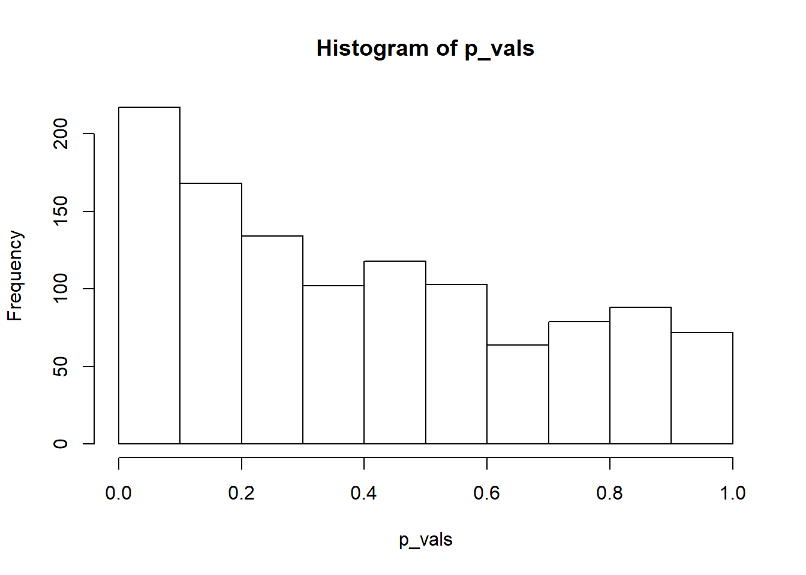
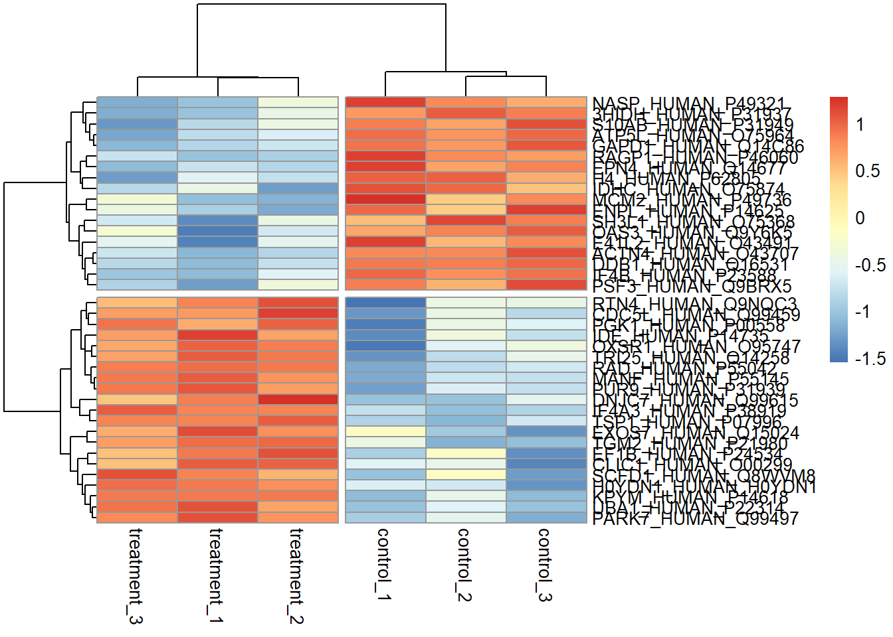
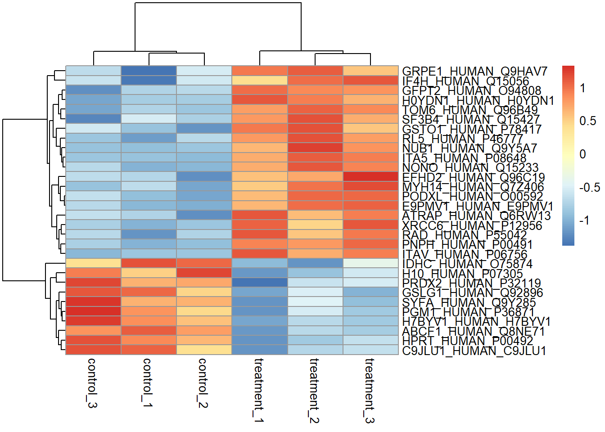
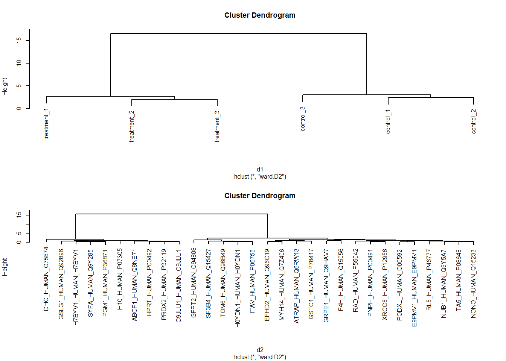
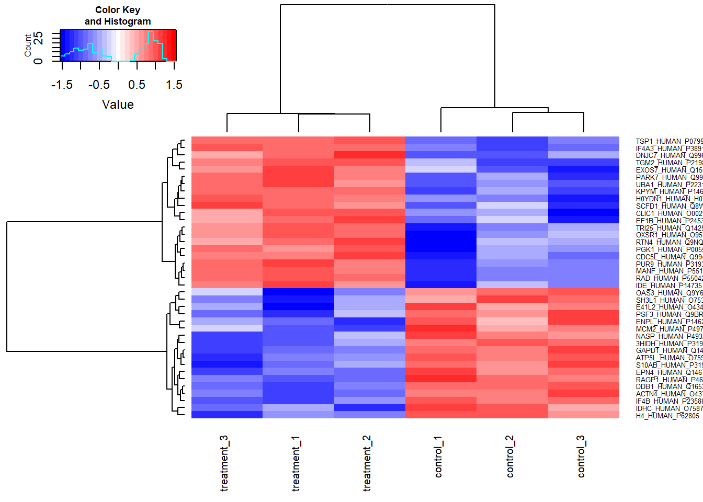

Chapter 4 Transformation and visualisation
Having imported our data set of observations for 7702 proteins from cells in three control experiments and three treatment experiments. Remember, the observations are signal intensity measurements from the mass spectrometer, and these intensities relate to the amount of protein in each experiment and under each condition.
Next we will transform the data to examine the effect of the treatment on the cellular proteome and visualise the output using a volcano plot and a heatmap.
4.1 Fold change and log-fold change
Fold changes are ratios, the ratio of say protein expression before and after treatment, where a value larger than 1 for a protein implies that protein expression was greater after the treatment.
In life sciences, fold change is often reported as log-fold change. Why is that? There are at least two reasons which can be shown by plotting.
One is that ratios are not symmetrical around 1, so it’s difficult to observe both changes in the forwards and backwards direcion i.e. proteins where expression went up and proteins where expression went down due to treatment. When we transform ratios on a log scale, the scale becomes symmetric around 0 and thus we can now observe the distribution of ratios in terms of positive, negative or no change.

Figure 4.1: Ratios are not symmetric around one, logratios are symmetric around zero.
A second reason is that transforming values onto a log scale changes where the numbers actually occur when plotted on that scale. If we consider the log scale to represent magnitudes, then we can more easily see changes of small and large magnitudes when we plot the data.
For example, a fold change of 32 times can be either a ratio 1/32 or 32/1.
As shown in Figure 4.2, 1/32 is much closer to 1 than 32/1, but transformed to a log scale we see that in terms of magnitude of difference it is the same as 32/1.

Figure 4.2: Transformation of scales using log transformation.
4.2 Dealing with missing values
Unless we’re really lucky, it’s unlikely that we’ll get observations for the same numbers of proteins in all replicated experiments. This means there will be missing values for some proteins when looking at all the experiments together. This then raises the question of what to do about the missing values? We have two choices:
- Only analyse the proteins that we have observations for in all experiments.
- Impute values for the missing values from the existing observations.
There are pros and cons to either approach. Here for simplicity we’ll use only the proteins for which we have observations in all assays.
We can drop the proteins with missing values by piping our data set to the drop_na() function from the tidyr package like so. We assign this to a new object called dat_tidy.
# Remove the missing values
dat_tidy <- dat %>% drop_na()
# Nunber of proteins in original data
dat %>% summarise(Number_of_proteins = n())## # A tibble: 1 x 1
## Number_of_proteins
## <int>
## 1 7702# Nunber of proteins without missing values
dat_tidy %>% summarise(Number_of_proteins = n())## # A tibble: 1 x 1
## Number_of_proteins
## <int>
## 1 1145This shrinks the dataset from 7,702 proteins to 1,145 proteins, so we can see why imputing the missing values might be more atrractive.
One approach you might like to try is to impute the data by replacing the missing values with the mean observation for each protein under each condition.
4.3 Data normalization
To perform statistical inference, for example whether treatment increases or decreases protein abundance, we need to account for the variation that occurs from run to run on our spectrometers and each give rise to a different distribution. This is as opposed to variation arising from treatment versus control which we are interested in understanding. Hence normalization seeks to reduce the run-to-run sources of variation.
A method of normalization introduced for DNA microarray analysis is quantile normalization (B. M. Bolstad et al. 2003).
If we consider our proteomics data as a distribution of values, one value for the concentration of each protein in our experiment that together form a distribution. Figure 4.3 shows the distribution of protein concentrations observed for the three control and three treatment assays. As we can see the distributions are different for each assay.

Figure 4.3: Protein data for six assays plotted as a distributions.
A quantile represents a region of distribution, for example the 0.95 quantile is the value such that 95% of the data lies below it. To normalize two or more distributions with each other without recourse to a reference distribution we:
- Rank the value in each experiment (represented in the columns) from lowest to highest. In other words identify the quantiles for each protein in each experiment.
- Sort each experiment (the columns) from lowest to highest value.
- Calculate the mean across the rows for the sorted values.
- Then substitute these mean values back according to rank for each experiment to restore the original order.
This results in the highest ranking observation in each experiment becoming the mean of the highest observations across all experiments, the second ranking observation in each experiment becoming the mean of the second highest observations across all experiments. Therefore the distributions for each each experiment are now the same.
Dave Tang’s Blog:Quantile Normalisation in R has more details on this approach.

Figure 4.4: Quantile Normalisation from Rafael Irizarry’s tweet.
These result of quantile normalization is that our distributions become statisitcally identitical, which we can see by plotting the densities of the normalized data. As shown in Figure 4.5 the distributions all overlay.
# Quantile normalisation : the aim is to give different distributions the
# same statistical properties
quantile_normalisation <- function(df){
df_rank <- apply(df,2,rank,ties.method="average")
df_sorted <- data.frame(apply(df, 2, sort))
df_mean <- apply(df_sorted, 1, mean)
index_to_mean <- function(my_index, my_mean){
return(my_mean[my_index])
}
df_final <- apply(df_rank, 2, index_to_mean, my_mean=df_mean) %>%
as.tibble()
return(df_final)
}dat_norm <- dat_tidy %>% select(-c(1:2)) %>%
quantile_normalisation() %>%
bind_cols(dat_tidy[,1:2],.)
Figure 4.5: Comparison of the protein distributions before normalization (left) and after quantile normalization (right).
4.3.1 T-test
Things we need to consider in performing our t-test:
- We are perfoming a test for each protein for between three control and treatment experiments and assume unequal variances between the control and treatment for each protein. A look at a single protein supports this assumption:
# Variance of first control protein observations
var(c(dat_norm$control_1[1], dat_norm$control_2[1], dat_norm$control_3[1]))## [1] 0.01473403# Variance of first treatment protein observations
var(c(dat_norm$treatment_1[1], dat_norm$treatment_2[1], dat_norm$treatment_3[1]))## [1] 0.002110211Hence we will perform a Welch’s t-test for unequal variances.
We don’t know whether the effect of the treatment is to increase or decrease the concentration of the protein, hence we will perform a two-sided t-test.
The observations for the proteins are for proteins of the same type but from independent experiments, rather than observations of the same individuals before and after treatment. Hence we test the observations as unpaired samples.
Use t.test to perform Welch Two Sample t-test on untransformed data. This outputs the p-values we need for each protein. I couldn’t figure out a tidy way to do this, so I am using the base R apply function here.
What’s going on in the code below is the following,
# T-test function for multiple experiments
expriments_ttest <- function(dt,grp1,grp2){
# Subset control group and convert to numeric
x <- dt[grp1] %>% unlist %>% as.numeric()
# Subset treatment group and convert to numeric
y <- dt[grp2] %>% unlist %>% as.numeric()
# Perform t-test using the mean of x and y
result <- t.test(x, y)
# Return p-values
return(result$p.value)
} # Apply t-test function to data
# array = dat, 1 = rows, FUN = expriments_ttest, and arguements
p_vals <- apply(dat_norm,1,expriments_ttest, grp1 = c(3:5), grp2 = c(6:8))
# Calculate the p-value for the first protein and compare with function
paste0(round(p_vals[1],4)," ",
round(t.test(as.numeric(dat_norm[1,3:5]),
as.numeric(dat_norm[1,6:8]))$p.value,4))## [1] "0.0927 0.0927"# Plot histograms
hist(p_vals)
- Perform log transformation of the observations for each protein.
# Select columns and log data
dat_log <- dat_norm %>%
select(-c(protein_accession,protein_description)) %>% log2()- Calculate the mean observation for each protein under each condition.
con <- apply(dat_log[,1:3],1,mean)
trt <- apply(dat_log[,4:6],1,mean)- The log fold change is then the difference between condition 1 and condition 2.
# Plot a histogram to look at the distribution.
# Calculate fold change
dat_fc <- con - trt
# Plot histograms
hist(dat_fc)
4.4 Visualising data
Based on empircal research, there are some general rules on visulisations that are worth bearing in mind:
- Plot
4.5 Creating a volcano plot
A volcano plot is a plot of the log fold change in the observation between two conditions on the x-axis, for example the protein expression between treatment and control conditions. On the y-axis is the corresponding p-value for each observation, representing the likelihood that an observed change is due to the different conditions rather than arising from a natural variation in the fold change that might be observed if we performed many replications of the experiment.
The aim of a volcano plot is to enable the viewer to quickly see the effect (if any) of an experiment with two conditions on many species (i.e. proteins) in terms of both an increase and decrease of the observed value.
Like all plots it has it’s good and bad points, namely it’s good that we can visualise a lot of complex information in one plot. However this is also it’s main weakness, it’s rather complicated to understand in one glance.
However, volcano plots are widely used in the literature, so there may be an amount of social proof giving rise to their popularity as much as their utility.
dat_vplot <- tibble(prots= dat_norm$protein_accession,
logfc = dat_fc,
logpval = -1*log10(p_vals))
dat_vplot %>% ggplot(aes(logfc,logpval)) + geom_point()
However it would be much more useful with some extra formatting…
dat_vplot %>%
# Add a threhold for significant observations
mutate(threshold = if_else(logfc >= 2 & logpval >= 1.5 |
logfc <= -2 & logpval >= 1.5,"A", "B")) %>%
# Plot with points coloured according to the threshold
ggplot(aes(logfc,logpval, colour = threshold)) +
geom_point(alpha = 0.5) + # Alpha sets the transparency of the points
# Add dotted lines to indicate the threshold, semi-transparent
geom_hline(yintercept = 1.5, linetype = 2, alpha = 0.5) +
geom_vline(xintercept = 2, linetype = 2, alpha = 0.5) +
geom_vline(xintercept = -2, linetype = 2, alpha = 0.5) +
# Set the colour of the points
scale_colour_manual(values = c("A"= "red", "B"= "black")) +
xlab("log2 fold change") + ylab("-log10 p-value") + # Relabel the axes
theme_minimal() + # Set the theme
theme(legend.position="none") # Hide the legend
But which proteins are the significant observations?
dat_vplot %>%
# Add a threhold for significant observations
mutate(threshold = if_else(logfc >= 2 & logpval >= 1.5 |
logfc <= -2 & logpval >= 1.5,"A", "B"),
prot_id = str_extract(prots,".{6}$")) %>% # Get last six characters
# Filter observations above the threshold
filter(threshold == "A")## # A tibble: 5 x 5
## prots logfc logpval threshold prot_id
## <chr> <dbl> <dbl> <chr> <chr>
## 1 AKA12_HUMAN_Q02952 -2.29 1.52 A Q02952
## 2 GFPT2_HUMAN_O94808 -3.09 2.45 A O94808
## 3 H7BYV1_HUMAN_H7BYV1 2.05 2.46 A H7BYV1
## 4 ITAV_HUMAN_P06756 -2.22 2.62 A P06756
## 5 CHD5_HUMAN_Q8TDI0 5.04 1.60 A Q8TDI04.6 Creating a heatmap plot
# Keep the same p-val cut-off, but relax the logfc to 1 which represents a
# doubling
dat_mut <- dat_norm %>%
mutate(logpval = dat_vplot$logpval, logfc = dat_vplot$logfc) %>%
filter(logpval >= 1.5 & (logfc >= 1 | logfc <= -1)) %>%
select(-c(2,9:10))
dat_sel <- as.matrix.data.frame(dat_mut[,2:7]) %>% log2()
row.names(dat_sel) <- dat_mut$protein_accession
dat.tn <- scale(t(dat_sel)) %>% t()
#dat.tn <- t(dat.n)
#dat.tn <- dat_sel
#gplots::heatmap.2(dat.tn, scale = 'row',trace="none")
pheatmap(dat.tn,cutree_rows = 2,
cutree_cols = 2,
fontsize_row = 6)
cal_z_score <- function(x){
(x - mean(x)) / sd(x)
}
data_subset_norm <- t(apply(dat_mut[,2:7], 1, cal_z_score))
data_subset_norm %>%
magrittr::set_colnames(c("Ctl 1", "Ctl 2", "Ctl 3",
"Trt 1", "Trt 2", "Trt 3")) %>%
magrittr::set_rownames(dat_mut$protein_accession) %>%
pheatmap(.,
fontsize = 6,
cutree_rows = 2,
cutree_cols = 2)
d1 <- dat.tn %>% t() %>%
dist(.,method = "euclidean", diag = FALSE, upper = FALSE)
d2 <- dat.tn %>%
dist(.,method = "euclidean", diag = FALSE, upper = FALSE)
# Clustering distance between experiments using Ward linkage
c1 <- hclust(d1, method = "ward.D2", members = NULL)
# Clustering distance between proteins using Ward linkage
c2 <- hclust(d2, method = "ward.D2", members = NULL)
# Check clustering by plotting dendrograms
par(mfrow=c(2,1),cex=0.5) # Make 2 rows, 1 col plot frame and shrink labels
plot(c1); plot(c2) # Plot both cluster dendrograms
# Set colours for heatmap, 25 increments
my_palette <- colorRampPalette(c("blue","white","red"))(n = 25)
# Plot heatmap with heatmap.2
par(cex.main=0.75) # Shrink title fonts on plot
dat.tn %>%
magrittr::set_colnames(c("Ctl 1", "Ctl 2", "Ctl 3",
"Trt 1", "Trt 2", "Trt 3")) %>%
magrittr::set_rownames(dat_mut$protein_accession) %>%
gplots::heatmap.2(., # Tidy, normalised data
Colv=as.dendrogram(c1), # Experiments clusters in cols
Rowv=as.dendrogram(c2), # Protein clusters in rows
density.info="histogram", # Plot histogram of data and colour key
trace="none", # Turn of trace lines from heat map
col = my_palette, # Use my colour scheme
cexRow=0.3,cexCol=0.75) # Amend row and column label fonts
References
Bolstad, B M, R A Irizarry, M Astrand, and T P Speed. 2003. “A Comparison of Normalization Methods for High Density Oligonucleotide Array Data Based on Variance and Bias.” Bioinformatics (Oxford, England) 19 (2): 185–93.